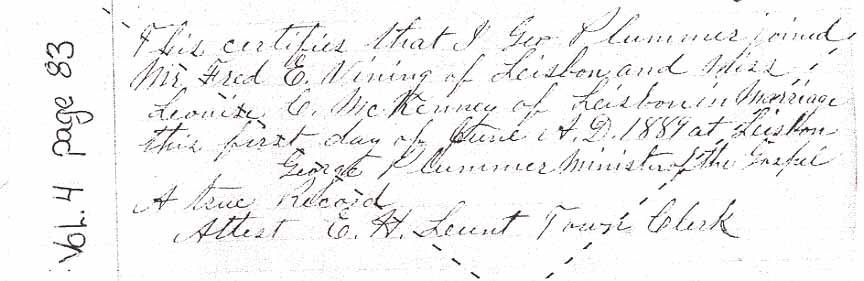
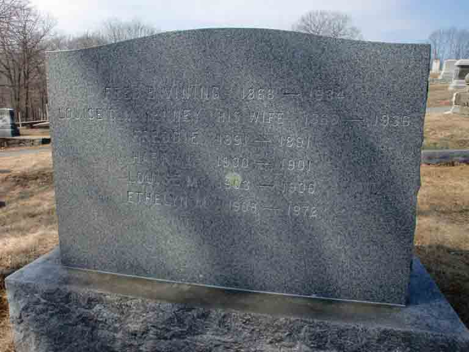

Marriage Data
Marriage record for Frederick Elmer Vining and Louise Conant McKenney, from Lisbon, Maine, town records. The dashed diagonal lines showing in the marriage record are placed there by the town of Lisbon to show that it is not a certified record.
Census Data
| 1890 | 1900 | 1910 | 1920 | 1930 | 1940 | |
| Frederick Elmer Vining | ? | ? | 42 | ? | ? | ? |
| Louise Conant (McKenney) Vining | ? | ? | 43 | ? | ? | ? |
| son Vining | ? | ? | [dead?] | |||
| Freddie Vining | dead | |||||
| Warren Clifford Vining | ? | 17 | ? | ? | ? | |
| Elmer LeRoy Vining | ? | 14 | ? | ? | ? | |
| Carl Merton Vining | ? | 12 | ? | married and living in separate household | ||
| Harry Linwood Vining | ? | dead | ||||
| Vivian Clifton Vining | 8 | ? | ? | ? | ||
| Louise Mildred Vining | dead | |||||
| Ethelyn May Vining | 1 | ? | ? | ? |

Death Data
Headstone for Frederick Elmer Vining, Louise Conant (McKenney) Vining and children Freddie, Harry Linwood, Louise Mildred, and Ethelyn May (from Find A Grave):